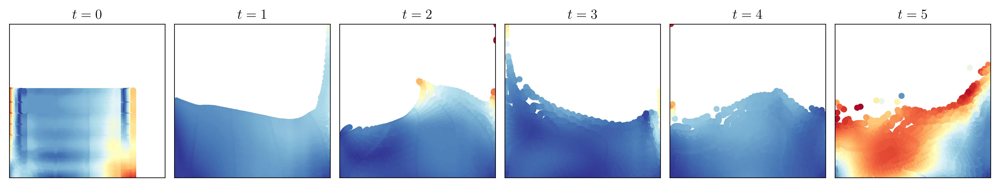

# Packages
import numpy as np
import matplotlib.pyplot as plt
import seaborn as sns
from matplotlib import cm
# Use LaTeX font
plt.rcParams.update({'text.usetex': True})
# Figure font config
label_font = {'fontfamily': 'Arial Black', 'fontsize': 14}
title_font = {'fontfamily': 'Arial Black', 'fontsize': 16}
legend_font = {'family': 'Palatino Linotype', 'size': 12}
text_font = {'family': 'Palatino Linotype', 'size': 12}
# Load data
particle = []
velocity = []
for i in range(6):
particle.append(np.load('../data/multi-matshow/particle_' + str(i) + '.npy'))
velocity.append(np.load('../data/multi-matshow/velocity_' + str(i) + '.npy')) X-4)**2 + (8 * Y - 4)**2))
# Plot
fig, axs = plt.subplots(2, 3, figsize=(8, 6))
for idx in range(6):
i = idx // 3
j = idx % 3
for particle_idx, (x, y) in enumerate(zip(particle[idx][:, 0], particle[idx][:, 1])):
axs[i, j].scatter(
x, y,
marker='o',
color=cm.RdYlBu_r(velocity[idx][particle_idx])
)
# Label and title
axs[i, j].get_xaxis().set_visible(False)
axs[i, j].get_yaxis().set_visible(False)
axs[i, j].set_title(f'$t={idx}$', fontdict=title_font)
# Axis range
axs[i, j].set_xlim([0.5, 5.5])
axs[i, j].set_ylim([0.5, 4])
plt.tight_layout()
plt.savefig('../fig/multi-matshow.jpg', dpi=300)